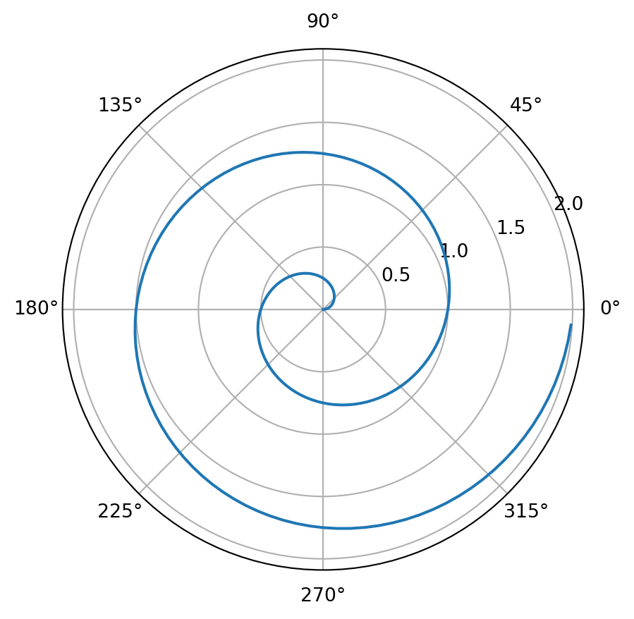

def f(x):
"""
A cool function that multiples an input x by 2.
"""
return 2*x
y = f(3)
print(y)6How to create technical posts that include Python code, explanatory text, and notes.
Your posts should be placed in the posts/ directory of your website.
If you want to make a new page called bruin, then create a new folder named bruin/ inside posts/. For example:
posts
└───composing
└───bruin < new folder
└───quarto
└───software
└───welcomeYou have two options with the folder bruin/.
Option 1: Add a Jupyter Notebook named index.ipynb Since your homework posts will be based on previous work you did in a Jupyter notebook or Google colab, this will probably be the easier option for publishing homeworks.
Option 2: Add a index.qmd text file But this is probably a better option for your group project blog post, and once you (hopefully) continue to build up your portfolio using this website.
For either options, make sure to add a header that looks like this to the top:
---
title: "Creating posts"
author: "Seyoon"
date: "2023-12-23"
categories: [week 0, example]
---In Jupyter notebook, this header should be in a raw cell up top.
You can use Markdown to style basic text, much as you do in Jupyter Notebooks.
Look into Quarto’s Markdown basics, Figures and Tables. You’re welcome to explore other pages that cover more complex concepts like Diagrams, Videos, and Callout Blocks.
If you are familiar with the \[\LaTeX\] typesetting system, you can use many standard commands by enclosing them in double $ symbols. You can make both inline math like \[ f(x) = e^x \] and display math like \[ \sum_{i=1}^\infty \frac{1}{i^2} = \frac{\pi^2}{6}. \]
You can and should include images in your posts, especially in cases where you have created a data visualization. If the image is already available online, you can link to it using the syntax :

(Source: https://xkcd.com/353/)
There are two main ways to insert code in your posts. When talking about a short concept, like the np.random.rand() function, you can type back ticks like this: `np.random.rand()`.
To create a larger block of code, use three consecutive backticks ``` to both open and close the code block. If you place the word “{python}” immediately after the opening code blocks, you’ll get attractive syntax highlighting:
def f(x):
"""
A cool function that multiples an input x by 2.
"""
return 2*x
y = f(3)
print(y)6Not only that, once you render the page with Quarto, the code output will show up below. If that’s not what you want, use the word “python” instead of “{python}”
Look at this other cool example from the Quarto tutorial.
For a demonstration of a line plot on a polar axis, see Figure 1.
import numpy as np
import matplotlib.pyplot as plt
r = np.arange(0, 2, 0.01)
theta = 2 * np.pi * r
fig, ax = plt.subplots(
subplot_kw = {'projection': 'polar'}
)
ax.plot(theta, r)
ax.set_rticks([0.5, 1, 1.5, 2])
ax.grid(True)
plt.show()
Figure 1: A line plot on a polar axis